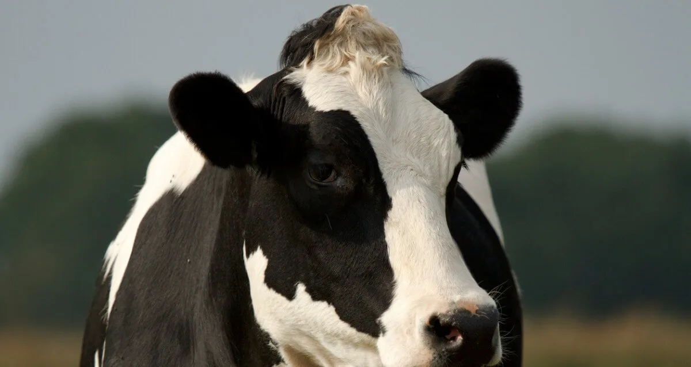
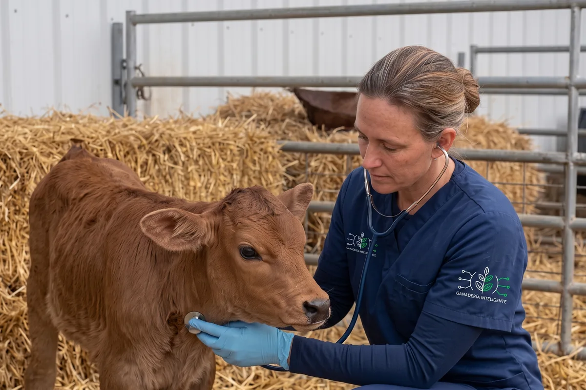

Manual, scattered records
Field notebooks and loose notes that make it hard to rebuild each animal's complete, continuous history when it is urgently needed.
Technology designed for livestock that connects each animal's information, from the pasture to the veterinarian.
Information that supports the livestock and those who care for it.


We are a Peruvian company innovating livestock farming with close, useful technology designed for the reality of the countryside.
Since 2026 we have been developing ICHU: a platform that brings together each animal's information, herd signals and veterinary support to make timely decisions and better protect every production.
Livestock work generates data every day. However, much of this knowledge is lost or stays fragmented.
Field notebooks and loose notes that make it hard to rebuild each animal's complete, continuous history when it is urgently needed.
A drop in grazing, a thermal variation or isolation in the paddock is often noticed when the problem has already advanced, raising costs and risks.
When the veterinarian reaches the pen, they often have to assess without the prior log of symptoms, applied doses or exact dates.
Supervising pasture rotation, water point availability and the location of animal groups across wide terrain requires constant time.
Keeping a clear count of extra forage, treatments and losses is complex when there is no organized structure for logging.
Difficulty aligning what field staff observe, what the manager logs and the guidelines given by the veterinary specialist.
ICHU is a platform designed to help farmers and veterinarians better organize and understand the information of each animal and the field.
ICHU does not replace the veterinarian. It gives them more information to work with.
Technology observes and collects patterns; professional judgment and livestock knowledge define the action.
Designed to simplify the workday. A clear space to keep your herd under control in the palm of your hand.

Access a reliable chronological history. Learn what happened to the animal in previous days, review trends and back your diagnoses with real contextual data.
The vet sees more context. The farmer gets better support.Request a demo for professionals


Livestock farming is not a static spreadsheet: it is a living biological cycle. ICHU organizes the key milestones of each animal's life to preserve its productive and health memory from its first days.
Collar assignment, genealogy, birth date and traits.
Observe grazing, movement and resting routines.
Pasture rotation, mineral supplementation and water access.
Log of heats, breedings, births, weanings or sudden changes.
On-site clinical review backed by data readings.
Medication or vaccine application with dose logging.
Recovery check and productive continuity.
ICHU is being designed to progressively connect with telemetry and Internet of Things (IoT) devices built to withstand the climate and conditions of our geography.
Monitoring thermal oscillations to early identify feverish episodes, heat stress or metabolic alterations before visible symptoms.
Detection of physical activity levels, rumination, resting time or lethargy that may suggest discomfort, heat or onset of labor.
Location by sectors and paddocks to prevent losses from straying, optimize rotational grazing and safeguard livestock safety.
ICHU alerts work as a timely call to attention so the farmer or veterinarian can inspect the animal in time.
Cow #089 logged 45% less movement during the last 6 hours of her usual grazing.
Bull #014 logged 39.4 °C sustained across two consecutive readings.
Group of 3 heifers detected near the east perimeter fence.
Reminder of the second dose of treatment prescribed for Calf #201.
Technical responsibility note: the alerts and metrics shown are conceptual orientation tools. They do not constitute an automated clinical diagnosis nor replace the professional judgment of the veterinarian.
The animal depends on its pastures, water and farm management. ICHU helps visualize the farm as an orderly operation.

Manage forage rotation, plan water supplies and keep a live animal inventory without relying on loose sheets.
Water trough availability.
Paddock recovery.
Forage & drug control.
Births & transfers.
Livestock management involves health commitments and official regulations. ICHU seeks to facilitate the organization of useful information for productive and veterinary management, within the framework of the obligations applicable to each activity.
Ministry of Agrarian Development and Irrigation: livestock development policies, pastures and productive promotion.
Institutional portalNational Agricultural Health Service: official vaccination calendars, zoosanitary control and tagging.
Health regulationsPPA (MIDAGRI): official registry for identification and access to State services.
PPA informationWe are building a new way to connect technology, livestock farming and veterinary support. Leave your details to arrange a guided presentation.
Hello! Welcome to ICHU. Would you like to schedule a demonstration for your livestock or learn about the clinical history?
09:15 amHi, I have a cattle herd and I want to see how collars and temperature alerts are logged.
09:16 amGreat! In the personalized demo we will show you how each animal's record works and how it connects with the veterinarian.
09:16 amIllustrative simulation of ICHU assistance. Automatic replies do not replace the team's attention.
The field knows. ICHU helps turn that knowledge into clear, timely information to protect the fruit of your work.
Request a demonstration